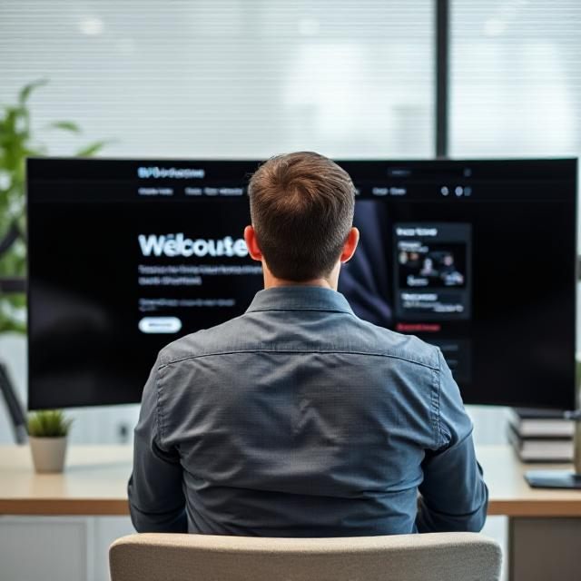
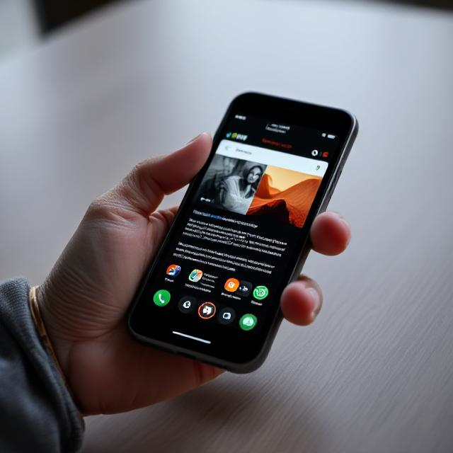

Služby
Poskytuji kvalitní webové stránky, které vám pomohou vyniknout na internetu.
-
Design internetových stránek
Navrhnu moderní a stylový web, který upoutá návštěvníky a posílí vaši online prezentaci.
 -
Optimalizace pro vyhledávače
Zvýším viditelnost vašeho webu ve vyhledávačích a přivedu vám více potenciálních klientů.
Responzivní weby
Navrhnu web, který bude skvěle vypadat a fungovat na všech typech zařízení, od počítačů po mobilní telefony.
Projekty
Zde je několik projektů, které jsem vytvořil:
Projekt Umělec
Projekt „Umělec“ je minimalistický web pro umělce, který slouží jako online portfolio. Zaměřuje se na prezentaci uměleckých děl, jako jsou obrazy, sochy a fotografie, s důrazem na jednoduchý a elegantní design. Web je přehledný, umožňuje snadné prohlížení děl a nabízí sekce o umělci, jeho inspiraci a kontaktní informace. Cílem je vytvořit profesionální a vizuálně atraktivní prostor pro umělcovu prezentaci.
Projekt Večerka
Projekt „Večerka“ je web pro malý obchod zaměřený na prodej lokálních produktů, jako jsou čerstvé potraviny, řemeslné výrobky a speciality. Obsahuje e-commerce řešení, které usnadňuje nakupování a správu produktů, s přehledným a intuitivním rozhraním. Web je navržen tak, aby byl přívětivý
pro uživatele, s jednoduchým procesem nákupu a snadným přístupem k informacím o produktech. Cílem je podpořit komunitní obchod a usnadnit místní nákupy online.
O mně
Jsem 16letý student IT školy s vášní pro webový vývoj. Programuji od 12 let a nejvíc mě baví frontend – práce s HTML, CSS, JavaScriptem a Reactem. Věřím v sílu dobře navržených a funkčních webů, a neustále se učím novým technologiím, abych se stal fullstack vývojářem.
Jsem ambiciózní, kreativní a odhodlaný proměnit své nápady v realitu.
Můj příběh
Moje cesta k programování začala už ve 12 letech. Fascinovalo mě, že pomocí několika řádků kódu můžu tvořit něco vlastního – weby, aplikace, nápady bez omezení. Byl to prostor, kde se spojila kreativita s logikou, a přesně to mě chytlo.
Od té doby jsem se začal věnovat frontend vývoji – psal jsem první stránky v HTML a CSS, později přidal JavaScript a React. Každý projekt mi ukazoval nové možnosti a zároveň mě motivoval zlepšovat se dál. Dnes už mám za sebou řadu školních i osobních projektů, na které jsem hrdý.
Studium na IT škole mi dalo pevné základy a umožnilo mi víc proniknout do světa technologií. Mým cílem je stát se fullstack web developerem a jednou pracovat na zajímavých, smysluplných projektech – ideálně v týmu, který sdílí stejné nadšení pro technologie jako já.
Každý nový řádek kódu je pro mě krokem blíž k tomu, čím chci být – vývojářem, který tvoří hlavou i srdcem.
Recenze
Co o mně říkají moji klienti:
Umělec
"Skvělá spolupráce, výsledek předčil naše očekávání!"
Spolupráce s tímto vývojářem byla vynikající. Podařilo se mu vytvořit web, který naprosto odpovídá našim požadavkům a přinesl vynikající výsledky.
Majitel Večerky
"Webové stránky fungují skvěle a jsou krásně zpracované!"
Byli jsme nadšení, jak rychle a efektivně byl náš web navržen a jak skvěle funguje na všech zařízeních. Kvalita práce je vynikající.
Majitel Restaurace
"Webové stránky působí aesteticky a profesionálně."
S tímto vývojářem byla spolupráce naprosto bezproblémová. Web pro naši restauraci je nejen krásně navržený, ale i velmi funkční. Zákazníci mohou snadno rezervovat stůl, objednat jídlo online a vše funguje hladce. Velmi doporučuji!
Kontakt
Chcete se dozvědět více? Kontaktujte mě: